Lecture Notes 16: Intro to Scope and Encapsulation
Objectives
By the end of this module, you will be able to:
- Demonstrate use of global variables.
- Demonstrate variable shadowing or hiding.
- Demonstrate ability to put methods in a separate class and use them.
Before Starting
If you do not have your Codio course ready, use any text editor or simple IDE. Some possibilities are:
- Write using Sublime; Compile and run in the Terminal
- Use IDEs like: IntelliJ, DrJava, or JGrasp
Global variables
Consider the following program:
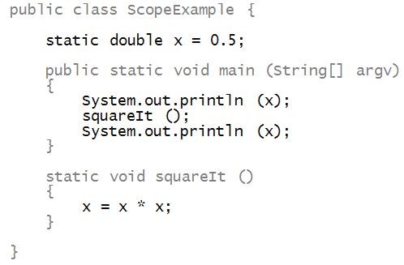
Activity 1:
Execute the above program. What does it print?
Let us point out a few things:
- The variable x is declared outside
any of the methods, including main:
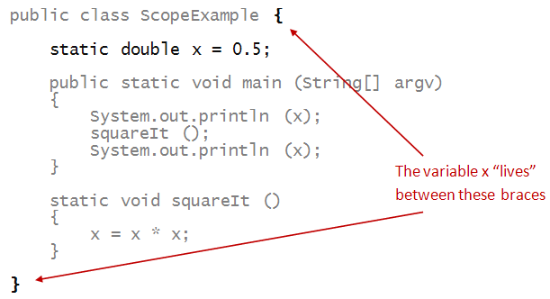
- It is accessible in any method defined in the class:
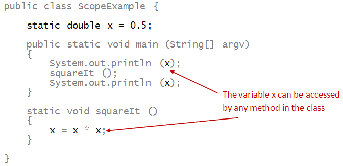
- Such a variable is called a global variable.
=> It's global to all the methods in the class.
Activity 2:
Define another global variable, an
int, and
two new void methods with no input parameters:
increaseIt(), and decreaseIt(), which increase and decrease the new global variable by 1 respectively.
Demonstrate its use by printing the values of the variable both before and after modification.
Why are globals useful? Let's look at an example:
- Suppose we have the following data in the file file.data.
5
2.0 1.0
0.5 3.0
3.1 5.2
4.0 3.6
5.0 0.5
The integer on the first line is the number of points. Then, each
line has one (x,y) pair.
- Goal: read the points and then compute the minimum, maximum
of the x and y values.
- Here's the program:
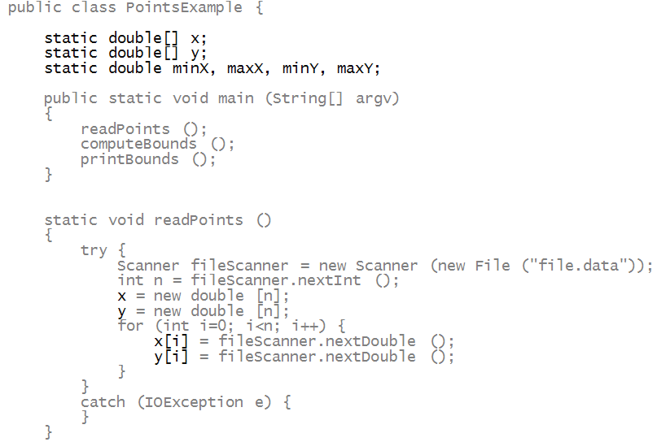
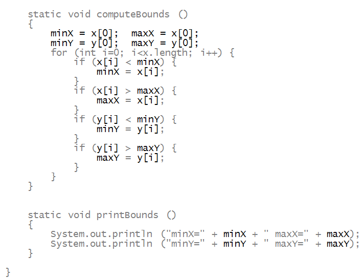
- Here, we've conveniently used a single set of
globals that is accessed by multiple methods.
- If we did NOT use globals, we would have to use
return values and parameters.
Activity 3 [Group Work] (3-minutes):
- You will be placed in groups of 3 or 4. Note your group number!
- Discuss what it would take to achieve the same results without global variables.
In other words, if we change readPoints() to read the points into variables that are in main, what do you need to change in the rest of the program in order to compute the same operations (computing the bounds and printing them)?.
- Write these ideas down and send them in a BBUltra Message To Pablo (not the General Chat) with this format:
Team <team number> , Members: <name1>, <name2>, <name3>: <your suggested changes here>
Remeber to Note your group number!, we'll be using it again.
Variable shadowing and scope
Consider this program:
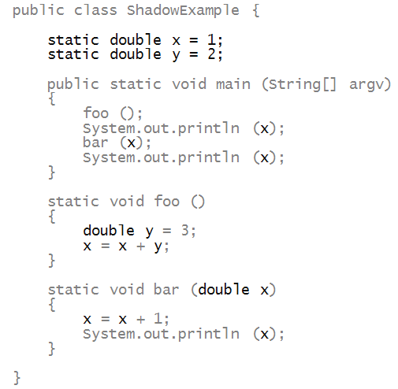
- Consider the method foo:
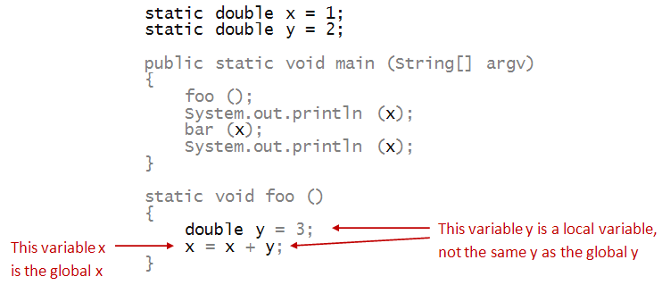
The local definition of a variable with the same name y
shadows the name of the global.
- Something similar happens with the method bar:
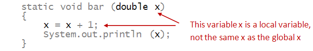
Thus, parameter variables shadow (obscure) global variables
of the same name.
In general, variables can be defined in any block
of code:
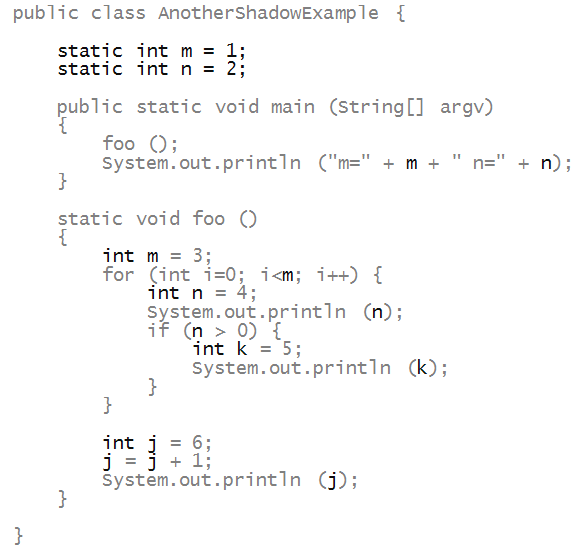
- Here, the m and n in main
refer to the global m and n
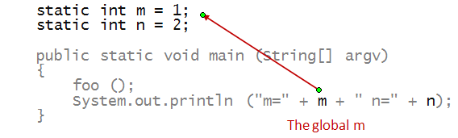
- However, the m in foo is a local variable
that shadows the global one:
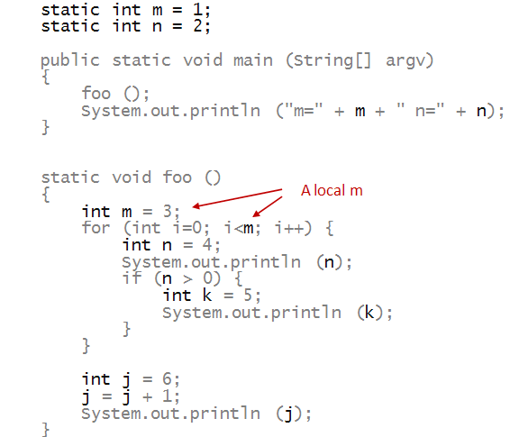
- The scope of a variable is the block of code
that can access a variable.
- The scope of the global variable m is
any method inside the class.
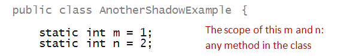
- Similarly, one can see the scope of the other variables
in method foo, for example m:
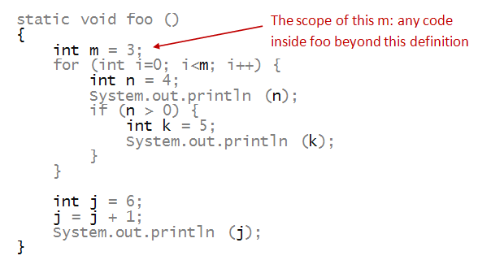
- And the others:
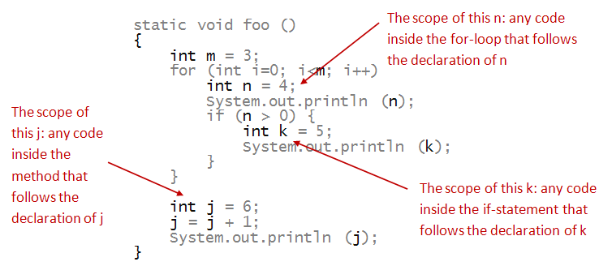
Now consider this example:
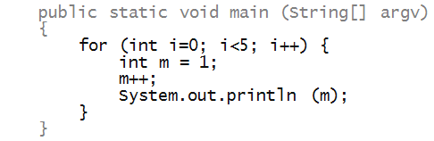
Activity 4:
What gets printed out? The value 1 repeatedly
or increasing values of m?
Activity 5:
Open the class AnotherShadowingExample and run it in the
Java Visualizer
Observe the following:
- Examine the variables within each of the scopes and experiment with
which ones are shadowed.
- Add a new method, with parameters that shadow global
variables, and with local variables that also shadow other
variables.
- When does shadowing work as expected, and when does it yield a
compiler error?
Packaging and encapsulation
Consider the following program:
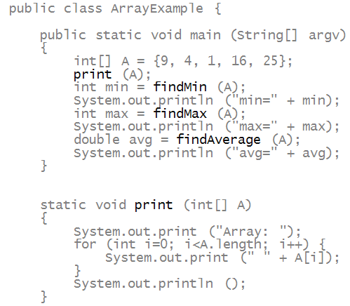
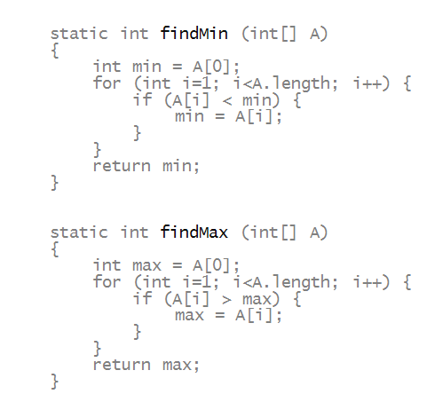
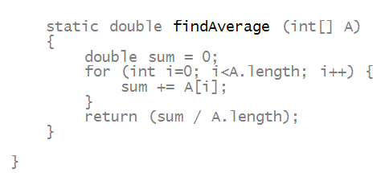
- Here, we see that there is an array and a bunch
of methods that "do things" with the array.
- Now, the methods appear to be of general use to
a variety of arrays, and could be useful in the future.
- Suppose we were to "package" these useful methods
into a class called ArrayTool as follows:
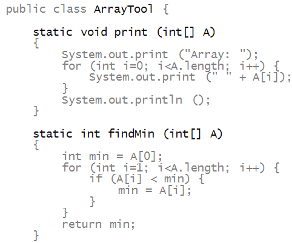
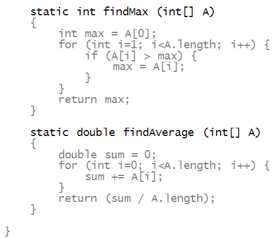
- Then, these could be used in the future by
any program in the same directory as ArrayTool, e.g.,
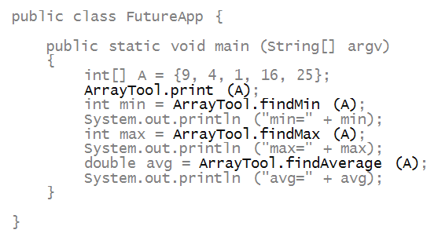
- This type of packaging is called encapsulation.
- Related code can be together.
- Other programs need not know the details, they can
just use (i.e., call) the methods in the class.
- Such encapsulation and re-use is a key part of
how efficiencies are realized in software development.
Compiling Classes with Dependencies
Notice that Compiling FutureApp requires you to do one of two things:
- You can navigate to the shared folder (code/) and compile in there with:
javac FutureApp.java.
This will compile both the indicated file and the dependency IF they are in the same folder.
- Alternatively, if you are compiling from a different directory (workspace/), you can list the series of files to be compiled, like this:
javac ArrayTool.java FutureApp.java
Activity 6:
Try compiling in those two ways.
Activity 7 [Group Work]:
Instructions:
- You will be placed in groups of 3 or 4. Go to your previous group number!
- You will be asked to come up with one example program for the group and demo it to a TA or the instructor (only one of you needs to code while the others help).
- Task: add a new useful method to ArrayTool above
and use it in a new application (call it FutureApp2). Examples are:
- Find the Standard Deviation (look it up)
- Finde the mode (look it up)
- Find the median (look it up)
- Find the sum
Visibility and Encapsulation
Consider the following program that is split into two files. Make
sure both files are in the same folder/directory. First,
VisibilityTest.java:
public class VisibilityTest {
public static int a = 3;
static int b = 4;
private static int c = 5;
private static int helper() {
return 1;
}
public static int helper2() {
return helper() + 1;
}
}
Second, VisibilityMain.java:
public class VisibilityMain {
public static void main(String[] args) {
System.out.println(VisibilityTest.helper());
System.out.println(VisibilityTest.helper2());
System.out.println(VisibilityTest.a);
System.out.println(VisibilityTest.b);
System.out.println(VisibilityTest.c);
}
}
It is quite common to break the main method into a separate class.
Activity 8 [Group Work] (2 minutes):
- You will be placed in groups of 3 or 4. Go to your previous group number!
- Discuss what would be needed to Fix the compiler errors from the given example. Why are there errors? What are the keywords in the program that are causing the compiler errors?
- At the end, some groups will be called to share their responses.
Programmers can control the
visibility of each of the methods
and global variables within their classes.
- Visibility controls if a method outside of the class can
access the given method/variable.
- Visibility is controlled by
the public
and private keywords
- public means that the
method/variable is accessible outside of the class.
- private means the opposite. The
symbol is private to the class.
- By default, symbols are visible to other classes in the same package (think of this as only files in the same folder).
Activity 8 answer the following questions:
Why do we want to control visibility? Why would we want to
hide
with
private any of our
methods/variables? Use the following example as a guide:
- Our class stores a spreadsheet for all the student
grades.
- It includes methods to add students, add homeworks, and add
grades for each student for each homework.
- It includes a method to retrieve the grade for a student's
homework.
- Why might we want a private global variable?
- Why might we want private methods?